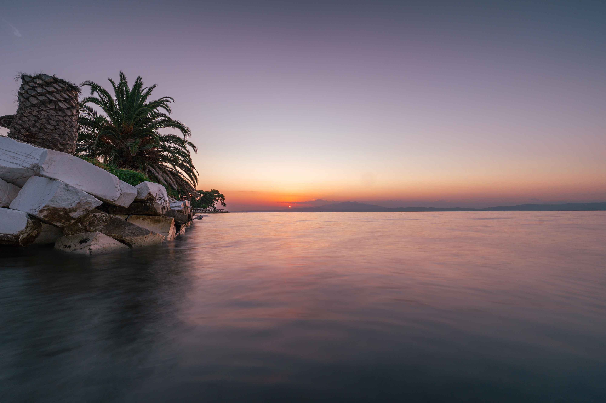
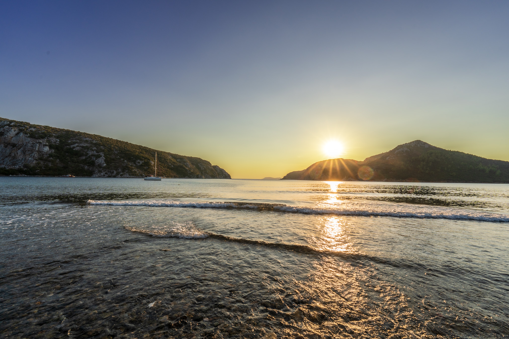

Alle Etappen im Überblick
⚽ FIFA WM 2026 · Deutschland (Annahme: Gruppensieger)
Die Gruppenphase (Gegner: Curaçao, Elfenbeinküste, Ecuador) endet vor Reiseantritt. Anstoßzeiten in Griechenland (EEST = CEST+1). Alle Abendspiele in den USA ca. 01:00–02:00 Uhr EEST.
08:30 IC 2007 Münster → Duisburg Hbf (09:31)
ca. 09:42 RE5 Duisburg → DUS Flughafen Terminal (ca. 10:10)
12:40 Flug A3541 DUS → SKG · Ankunft 16:10
Transfer Flughafen → COLORS Urban Hotel, Thessaloniki
Tagesausflug Vergina – Königsgräber Philipps II. (UNESCO) · ggf. Pella
Day-Dream Yachting · Abfahrt Thessaloniki Richtung Kassandra
Ammouliani · Ouranoupoli · Athos-Passage · Thassos (Aliki, Limenas) → Kavala
Philippi Festival 2026 (69. Jahrgang „Metamorphosis") · Tagesausflug Philippi UNESCO · Mietwagen
Nachtfotografie: Aquädukt · Hafen · Panagia · Kastro
Sonntags-Fahrplan abweichend – unbedingt bestätigen! Tel: 2510 835977
Transfer Skala Prinos → Hotel Skala, Skala Rachoniou (Bus oder Taxi, ~10 min)
Programm via Frosch · Giola · Aliki · Saliara Beach · Theologos · Limenas-Antiktheater
Flughafen KVA (Alexander der Große) bei Chrysoupoli/Keramoti · Ankunft DUS 12:45
Anreise 27. Juni 2026
🚆 Zugreise nach DUS
⚠ Duisburg Umstieg nur 11 Minuten
Bei IC-Verspätung kann der RE5 09:42 verpasst werden. Nächste Verbindung kennen und im DB-App gespeichert haben. Für einen Flug ausreichend Zeit einplanen.
✈ Flug DUS → Thessaloniki
🚌 Bus SKG → Stadtmitte
🏨 COLORS Urban Hotel · Thessaloniki
Check-in 27. Juni abends · Check-out 29. Juni (Törn-Start)
Lage: Innenstadt, Laufweite zu Aristotelous-Platz und Paralia. Ideal für 2 Tage Stadtprogramm.
Vom Bus: Ab Aristotelous-Platz / Bahnhof kurzer Fußweg oder Taxi zum Hotel.
| Flug | Von | Ab | An DUS |
|---|---|---|---|
| EW9685 (Eurowings) | KVA Kavala | 10:55 | 12:45 |
Thessaloniki · 27–29. Juni
Charakter der Stadt
Kompaktes byzantinisches, osmanisches und sephardisch-jüdisches Erbe. Beste Foodie-Stadt Griechenlands. Alles zu Fuß erreichbar. Thermäischer Golf mit Blick bis zum Olymp.
→ Profil Eleni M. ↗
→ Profil Nikos C. ↗
📸 Foto-Spots · Sony A7V
🏛 Kultur & Ausflüge
Museum für Byzantinische Kultur – sehr gut kuratiert
Beide auf dem Weg zur Paralia, kompakt zusammen machbar.
Meze mit Tsipouro – nordgriechische Spezialität, kleine Teller
Mydia (Muscheln) – Saganaki oder Pilafi
Günstig: Rund um die Märkte (Kapani-Gassen), nicht Ladadika
Segeltörn SY ANNA
⚽ WM 2026 · Achtelfinale ~4.–5. Juli · An Bord
Mitten im Törn. In Marinas (Porto Koufo, Vourvourou) meist gutes Mobilnetz. Streaming via ARD/ZDF-Mediathek oder MagentaTV – EU-Roaming gilt, kein Aufpreis. Anpfiff ca. 22:00 oder 01:00 Uhr EEST je nach Spielslot.
⚠ Potidea-Kanal – Mastdurchfahrtshöhe ungeklärt
Brückenhöhe ca. 18 m (eine Quelle, unbestätigt) · Bavaria 45 Masthöhe ~20,75 m. Falls korrekt: keine Durchfahrt möglich. Größere Yachten fahren standardmäßig außen um Kassandra. Mit Thomas Brandes klären.
Tagesplan mit Seemeilen (Schätzung · Skipper entscheidet je nach Wetter)
| Tag | Datum | Etappe | ~sm | Notiz |
|---|---|---|---|---|
| 1 | 29.06 | Thessaloniki · Hafen | — | Crew-Briefing, Einkauf, Proviantierung, keine Fahrt |
| 2 | 30.06 | Thessaloniki → Kassandra (Nea Fokea / Possidi) | ~25–30 | Erste Etappe, Thermaikos-Golf queren |
| 3 | 01.07 | Kassandra → Porto Koufo (Sithonia-Südspitze) | ~30–35 | Längere Etappe, um Kassandra-Spitze |
| 4 | 02.07 | Porto Koufo → Vourvourou / Diaporos-Inseln | ~15–20 | Kurze Etappe · Zeit zum Baden & Fotografieren |
| 5 | 03.07 | Vourvourou → Ammouliani / Drenia | ~15–20 | Singitischer Golf · Drenia-Inseln |
| 6 | 04.07 | Ammouliani → Athos-Passage → Thassos Südküste | ~35–40 | Längste Etappe · Athos-Sperrzone beachten |
| 7 | 05.07 | Thassos Südküste → Limenas | ~15–20 | Inselumrundung · Kulturstopp Limenas |
| 8–9 | 06.–07.07 | Puffertag / Wetterreserve Thassos | — | Ankern, Baden, Ausflüge, WM streamen |
| 10 | 08.07 | Thassos → Kavala | ~20–25 | Letzte Etappe · Ankunft Kavala Abend |
| — | 09.07 | Kavala · Übergabe | — | Boot übergeben · Abschied Crew |
Stopps & Ankerbuchten
📞 +30 2375 071371 · infotakymata@gmail.com
Wetter · Meltemi Juli
Nordägäis weniger Meltemi-geprägt als Kykladen. Anfang Juli nimmt NE (Etesien) zu. Offene Golfquerungen in Morgenstunden legen. Tagesvorhersage täglich prüfen.
⚓ Törntagebuch · SY ANNA · 29.06.–09.07.2026
Hier die tatsächlich gefahrene Route eintragen. Felder sind direkt editierbar — am Ende des Tages ausfüllen und Speichern klicken. Daten werden lokal im Browser gespeichert.
| Tag | Datum | Von → Nach | sm | Wind / Bft | Highlight des Tages | Notizen · Fotos |
|---|---|---|---|---|---|---|
| 1 | 29.06 | |||||
| 2 | 30.06 | |||||
| 3 | 01.07 | |||||
| 4 | 02.07 | |||||
| 5 | 03.07 | |||||
| 6 | 04.07 | |||||
| 7 | 05.07 | |||||
| 8 | 06.07 | |||||
| 9 | 07.07 | |||||
| 10 | 08.07 | |||||
| — | 09.07 |
Sithonia · Westseite
Restaurant: Moustakas Taverna direkt am Wasser – Fisch vom Tag, einfach und gut. Kein Englisch nötig, zeigen reicht.
Restaurant: Strand-Tavernen in Vourvourou direkt am Wasser. Frühstück und Mittagessen, abends ruhiger.
Restaurant: Ta Kymata – Tische direkt im Wasser. Fisch und Meeresfrüchte auf Award-Niveau. +30 2375 071371. Reservierung zwingend.
Sithonia · Ostseite & Sarti
Restaurant: To Limani (Hafenrestaurant, einfach, frisch), Kafeneio am Hauptplatz für Frühstück.
Singitischer Golf · Athos-Vorfeld
Restaurant: Taverne am Hafen Ammouliani – Oktopus, Kalamari, gegrillter Fisch. Sehr lokal.
Restaurant: Restaurant Liotrivia – traditionelle griechische Küche, gute Meze-Auswahl. Kaffee und Gebäck am Hafen.
Thassos · Limenas
Restaurant: Simi Restaurant am Hafen (Fisch, schöne Lage) · To Karnagio (Meeresfrüchte, Insider-Tipp der Einheimischen). Abends Ouzo am Hafen.
📸 Foto-Highlights Törn
70–200mm: Athos-Gipfel von Sarti, Klöster bei der Passage, Schiffe im Abendlicht
24–70mm: Hafenszenen, Taverne-Stimmung, Crew-Momente
16–25mm: Diaporos-Bucht von oben, Vourvourou-Panorama, Sonnenuntergang mit Mast im Vordergrund
Kavala · 9–12. Juli
⚽ WM 2026 · Viertelfinale ~9.–10. Juli in Kavala
Törnende = Kavala-Ankunft. Idealer Abend zum Ausruhen + WM schauen. Das Airotel Galaxy hat TV auf den Zimmern. Alternativ: Sportbar im Hafenbereich.
Anpfiff Deutschland-Spiel ca. 01:00 Uhr EEST (Abend-Slot USA) oder 22:00 Uhr EEST (Nachmittags-Slot USA) – genaue Zeit erst kurz vor dem Turnier fixiert.
Philippi Festival 2026 · 69. Jahrgang
Thema: „Metamorphosis". Programm noch nicht veröffentlicht (Stand Juni 2026). Antikes Theater Philippi + verschiedene Spielorte in Kavala.
Tickets: ticketservices.gr
Tel: +30 2510 220876 · festivalphilippon.gr
🚗 Mietwagen empfohlen
Philippi liegt 15 km außerhalb – kein direkter ÖPNV. Autounion (8,6/10) oder Avance (8,4/10) in Kavala ca. €30–42/Tag im Juli. Am 12.7. morgens zurückgeben, dann Fähre nach Thassos.
📸 Tagsüber · Sightseeing
🌙 Nachtfotografie mit Stativ
Goldene Stunde & Blaue Stunde im Juli
Sonnenuntergang ca. 20:30 · Blaue Stunde 21:00–21:30 Uhr. Alle Spots fußläufig ab Airotel Galaxy erreichbar.
Selbstauslöser 2 s oder Fernauslöser verwenden.
Thassos · 12–19. Juli
🚢 Fähre 12. Juli ist ein Sonntag!
Wochentags-Zeiten Kavala → Skala Prinos: 08:30 · 10:15 · 12:15 · 14:00. Der Sonntags-Fahrplan ist abweichend und fährt deutlich seltener. Unbedingt vor dem 12.7. bestätigen.
Kavala Ticket Office: 2510 835977 · thassos-ferries.gr
Skala Prinos → Hotel Skala Rachoniou: Bus (KTEL) oder Taxi ~10 min.
✅ Rücktransfer 19. Juli gebucht
Transfer Thassos → KVA via Frosch-Sportreisen – kein eigenes Taxi/Fähre nötig. EW9685 KVA 10:55 → DUS 12:45 · Ref: 9ZD2KK.
⚽ WM 2026 · Halbfinale & Finale
Streaming unterwegs: ARD/ZDF-Mediathek oder MagentaTV – VPN nicht nötig in der EU (Roaming-Regelung gilt auch in Griechenland).
🚲 E-Bike Programm (Frosch)
Basis: Skala Rachoniou
Nordküste zwischen Skala Prinos (west) und Limenas (ost). Ruhiger Küstenort. Tagestouren via Frosch-Programm – kein eigener Mietwagen/Roller nötig. Reichweite: Nordküste + Limenas gut machbar. Süd-/Ostspots (Aliki, Giola, Saliara) je nach Tourenplan.
Skala Rachoniou → Limenas: 07:00 · 09:45 · 11:35 · 13:35 · 15:30 · 17:30
Sonntag: deutlich weniger Fahrten!
KTEL Thassos: +30 25930 22162
Preis Skala Prinos → Limenas: €2,40
Offene Punkte & Checkliste
🔴 Dringend / Buchen
🟠 Mit Thomas Brandes klären
🔵 Kurz vor Reise prüfen
🧺 Kavala · 9–12. Juli
🎁 Auf Thassos erledigen · 18. Juli
✅ Bereits gebucht & bestätigt
📷 Galerie



.jpg)